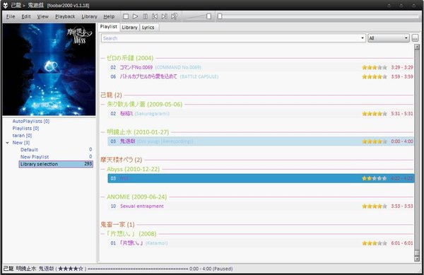
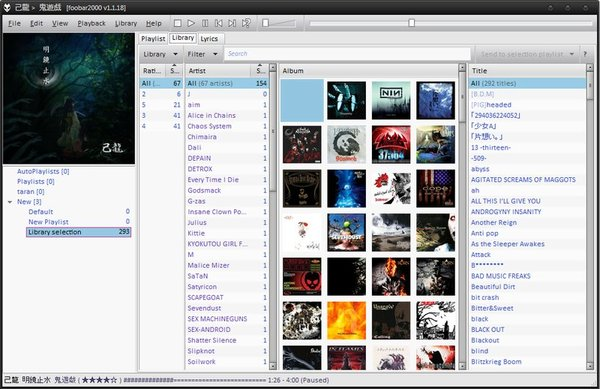
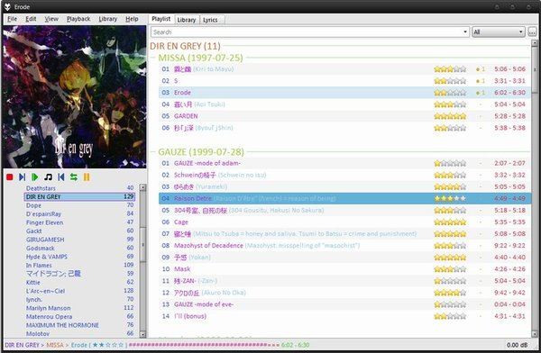
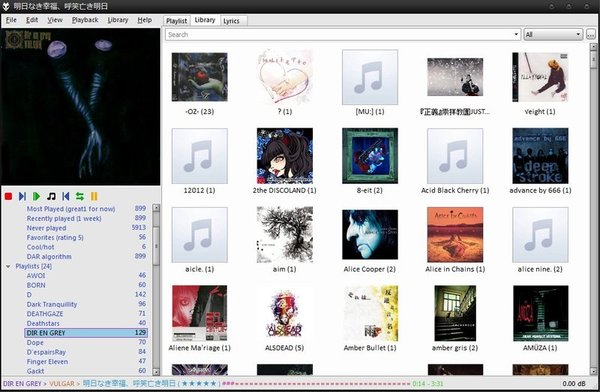

foobar2000 theme: Simple Colorful
¿De que se trata esto? Esto es un theme x2 para foobar2000, que es simple, minimalista y medianamente colorido (para que no sientas que vivis en un arco iris), que tiene los plugins minimamente requeridos (por mi persona).
Requerimientos
Aparte de foobar necesitas:
- Plugins (los podes sacar y/o poner los que te gusten, pero si o si
los necesitas para instalar)
- EsPlaylist
- Playlist Organizer
- Lyric Show Panel 3
- Facets (inútil en vista para ColumnsUI pero se puede acceder via menu)
- Columns UI si se elige esa vista (recomendada, tiene mas onda)
- Minimo conocimiento de manejo de foobar, mas allá de cómo saber reproducir música
- Un par de toquecitos mágicos
- Descargar el super pack de themex2 y configuraciones
Lo bueno de este(os) theme(s) es que en ambos UI (default y columns) se usan los mismos plugins (o algo asi).
Instalación
Primero las configuraciones, cosa de que no tengas que poner a mano la
gran mayoria de colores. Los archivos de esa carpeta ponerlos en la
carpeta configuration: si tenes foobar portable, esta dentro de esa
carpeta. Si tenes el instalado, vas a %appdata%\\foobar2000 (Pro Tip:
tecla de windows + r, pegas esa dire).
Los themes ponelos donde quieras, usualmente van dentro de una carpeta theme (para los de la vista default) o skins (para los de la vista de columnsUI) en el root de instalación de foobar.
Elegir una vista que vos quieras en base a los screenshots de abajo, e importar el archivo correspondiente.
En el playlist, hace click derecho > grouping > artist/album clrs. Esto es para poner un par de colorcitos en el header de cada album y artista, además de sacar el album art. No es necesario y podes poner el que mas te guste.
Al lado del titulo te muestra el tag %comment%. Si se lo queres sacar o
cambiar, editas la columna.
También podes editar la columna de duración para que te muestre como quieras. Yo tengo tiempo transcurrido - tiempo total.
Screenshots
Veamos primero el theme en la UI default:


Nada mal para ser la vista default con sus limitaciones (como la falta
de colores en la interfaz... how dare you). Crease a no, los botones de
playback se pueden cambiar, pero requieren .ico que no tenia a mano.
Ahora el que uso, el theme con Columns UI.


Esta mas lindo, no? :D Como veras, esta configuracion no tiene seekbar que ande/se pueda adelantar atrasar un tema. Eso esta... escondido. Posate unos segundos debajo del cover art y aparece.
La vista de libreria funciona asi: ves los artistas -> doble click -> te lleva a los albums -> doble click -> lleva a los temas. Queres volver? doble click sobre los headers. Todo esto se puede configurar. La idea es que cuando te lista los artistas, te muestre las fotos de los artistas pero todavia no tengo y quedo asi =P.
A tener en cuenta
Los screenshots son en base a MI configuracion. Las estrellitas que
estan en el status bar (abajo) no se te van a mostrar porque uso un
plugin para estadisticas (y se toman de ahi, no hice el if para ver si
existe pero las podes sustituir o dejar el signo de pregunta).
Las estrellitas amarillas en el playlist NO las vas a tener. Toqué el
dll para cambiarlas. Vos quedas con las grises.
La vista de libreria son distintas en ambas configuraciones. A Facets (como esta en la de default) lo accedo desde menu y uso el EsPlaylist como visor de libreria. Vos pones el que quiera (hay mas e incluso uno que viene para el defaultUI).
Los botones de playback en el ColumnsUI se pueden cambiar (son .png) o
resetear a los que vienen de fábrica, y reorganizar. Boton derecho >
button options (no sabia que se guardaba eso también =P)
La columna con puntito y numero NO la vas a tener, es de otro plugin+script.
Parece que el title bar no te lo guarda; tampoco es difícil cambiarlo.
Vuelvo a repetir, esto es lo que uso, vos lo tomas como base y editalo como quieras. Leyendo el Titleformat Reference vas a poder modificar cosas sin entrar a nada de programación (a no ser que lo quieras).